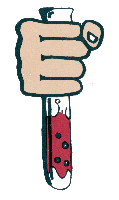

The Complete Book Of Ecstacy

Second Edition
by U. P. Yourspigs
(c) 1992, 1995 Synthesis Books
HTML conversion by Rhodium 1999
Introduction
Chapter 1 - Chemistry Basics
Chapter 2 - Laboratory Techniques
Chapter 3 - Miscellaneous Chemicals
Chapter 4 - Alkyl Halides
Chapter 5 - The Main Precursors
Chapter 6 - Simple Aliphatic Amines
Chapter 7 - MDA
Chapter 8 - Ecstacy and Eve
Chapter 9 - Tidbits on Other Highs
References
Thanks to "The Professor" for corrections to the manuscript